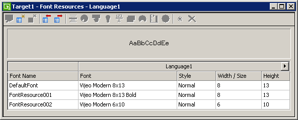
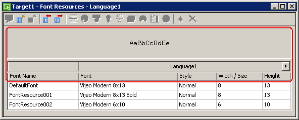

|
|
|
|
|
|
|
|
Font resources can be used in Text Resources, and Message Display, Meter, Bar Graph, and Selector parts. The Font Resource editor is shown below.

You can use the icons at the top of the resource editor to run most resource operations. Font Resources use four of the available icons.
|
Icon |
Name |
Description |
|
|
New Resource |
Adds a new resource to the resource editor. Each row is a font resource. For information about adding resources, see Section 21.1.4.1, Creating Resources. |
|
|
Delete Resource |
Deletes the selected resource (row) from the resource editor. |
|
|
Import Resource |
Imports font resources from the file into the Font Resource Library, using the original resource names. If there is a naming conflict, the editor confirms whether to use default names.
For information about exporting and importing resource files, see Section 21.1.4.11, Copying Resources Between Targets and Projects. |
|
|
Export Resource |
Exports the entire Font Library to a file.
You can import the exported font library resource file into other targets or other projects. For information about exporting and importing resource files, see Section 21.1.4.11, Copying Resources Between Targets and Projects. |
When you add a font resource, use the font resource properties to customize the font settings.

|
Property |
Description |
|
Preview |
The preview area below the Resource toolbar displays characters that indicate how the current font settings will appear. |
|
Language |
If your application is set up with multiple user languages, you can set up different font settings for each language. Click the arrow to expand the font resource editor to display all the languages. Define the font settings for each user language. Click the arrow again to contract the font resource editor to display font settings for the current language only. For a detailed list of languages supported by all available fonts, see Section 20.2.11, Font Support for Different Languages. |
|
Font Name |
Defines the name of the font resource. Whenever the font resource is created, a default name is generated. When renaming the resource, its name must be unique within the target, must contain no more than 32 valid characters, and must follow the naming conventions. For more information, see Appendix 9, Naming Conventions. |
|
Font |
Defines the font used in the resource. For a detailed list of fonts available, see Appendix 5, Hardware Specifications. |
|
Style |
Defines the font style: Normal, Bold, or 3D. |
|
Width/Size |
Defines the font size. Some fonts support both Width and Height settings. Some fonts support only the Size setting. For some fonts, to change the font size you have to change the font itself. |
|
Height |

You cannot change multiple font resource properties at the same time.